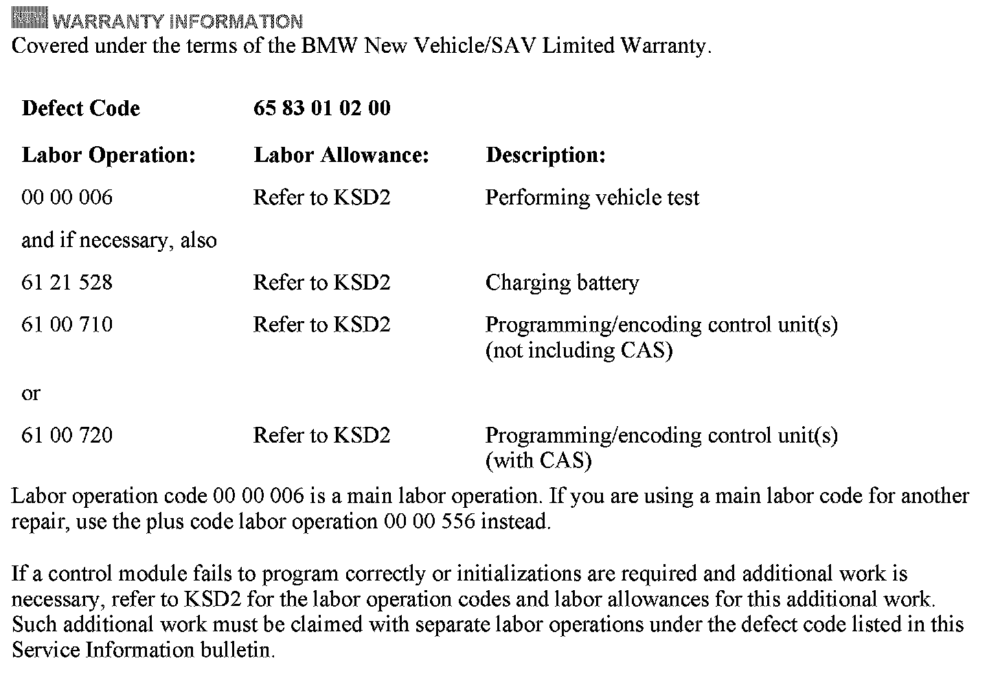

Audio System - SIRIUS(R) Stations Not In Channels List
SI B65 01 08Audio, Navigation, Monitors, Alarms, SRS
September 2011
Technical Service
This Service Information bulletin supersedes SI B65 01 08 dated May 2008.
[NEW] designates changes to this revision
SUBJECT
SIRIUS Radio Stations Missing in "All Channels" List
MODEL
E60, E61 *(5 Series)
E63, E64 *(6 Series)
E70 *(X5)
E71 *(X6)
E82, E88 *(1 Series)
E90, E91, N92, E93 *(3 Series)
*with option 609 (CCC) and option 655 (SDARS Satellite Radio)
SITUATION
Some of the SIRIUS satellite radio stations between channel 20 and channel 50 are not displayed in the "All channels" list.
These channels are still available in the "Presets" menu and in "Categories".
To find out what the SIRIUS satellite radio stations are on the air, refer to the SIRIUS website: www.sirius.com/whatsonsirius
CAUSE
Software issue in the Car Communication Computer (CCC)
[NEW] CORRECTION
Do not replace parts.
Program and code the vehicle with the most recent ISTA/P (Integrated Service Technical Application/Programming) version. Refer to CenterNet/Workshop Technology for additional information on programming and coding.
Note: When the ISTA system message displays:
Battery voltage only "XX.XX" V. Please connect charger.
Please note the displayed battery voltage reading in the repair order comments section.
Note that ISTA/P will automatically reprogram all programmable control modules that do not have the latest software.

[NEW] WARRANTY INFORMATION